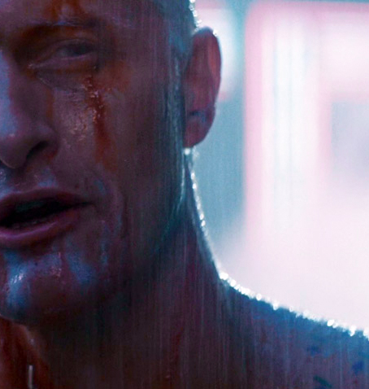

My name is Katrina. I am a first-year Computer Science student at Nottingham Trent University.
I came to the UK from Lithuania, Klaipeda where I lived before for 19 years. Since my childhood
I have always enjoyed technologies and computing. So this was the reason why I chose this course.
Besides technologies, I am interested in various things. My other obsession as long as I remember
myself was movie-making. I even considered the option to study this course, but all in all, decided
that job in the IT industry has a bigger future. My interest in movies motivated me to watch a lot
of different films and below you can find my personal favorites list and must to see recommendations.
Another field which was interesting for me at school was physics. I have spent long hours
learning this science at a good level. Moreover, during school times I took an advanced course
of physics and then took an exam of it which I passed with pretty remarkable grade. Eventually,
I became a real fan of space-related topics. Physics inspired me to gain at least basic knowledge
in orbital mechanics and space-shuttle construction. So now I am trying to keep up with the latest
news about NASA and SpaceX projects and launches. I hope that after finishing this course, I would
be able to connect my future with this and work towards a better future using all knowledge which
I gained in university.

MUST WATCH:
- Interstellar (2014)
- Blade Runner (1982)
- 12 Angry Men (1957)
- Schindler's List (1993)
- Casino (1995)
- Reservoir Dogs (1992)
- Whiplash (2014)
- A Clockwork Orange (1971)
- The Godfather (1972)
- The Silence of the Lambs (1991)
- Leon (1994)
- 2001: A Space Odyssey (1968)
- Incendies (2010)
- Scarface (1983)
- City of God (2002)